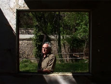

|
DEUX FOIS LE TOUR DU MONDE
TWICE AROUND THE WORLD
Jean-Claude Rousseau | F 2006 | 8 Min.
Material : HDV
Format: DigiBeta
Originalsprache: Französisch
Kamera: Jean-Claude Rousseau
Ton: Jean-Claude Rousseau
Schnitt: Jean-Claude Rousseau
Produktion: Jean-Claude Rousseau
Vertrieb: Jean-Claude Rousseau
Deutsche Erstaufführung
Nicht die Reise um die Welt, sondern die Reise der Welt, dies zwei Mal. Ein leerer Fensterrahmen in einer Mauer, der den Blick auf einen sonnendurchfluteten Garten freigibt. Wo ist innen, wo außen? Die Handlung mündet in einem sich schließenden Kreis. "Ohne zu wissen, warum, liebe ich die Welt, auf die wir kommen, um zu sterben." - Natsume Sôseki
Jean-Claude Rousseau, geb. 1946 in Paris. Studium der Rechtswissenschaften. Im New York der 70er Jahre entdeckte er den avantgardistischen Film für sich und widmete sich nach seiner Rückkehr nach Paris verstärkt der Kunst. 1983 drehte er seinen ersten Kurzfilm auf Super-8. Seither wird sein Werk in zahlreichen Ausstellungen und auf internationalen Festivals gezeigt, u.a. im Pariser Centre Georges Pompidou, an der New York University, in der Cinémathèque royale, Belgien und auf den Festivals von Locarno, Wien, Turin und Marseille. 2001 erhielt er auf den Filmfestspielen von Venedig eine komplette Retrospektive seines Werks. UNDERDOX 04 zeigt seine Filme in deutscher Erstaufführung.
Filme: Jeune femme à sa fenêtre lisant une lettre 1983 | Venise n'existe pas 1984 | Keep in touch 1987 | Les antiquités de Rome 1989 | La Vallée Close 1995 | Lettre à Roberto 2002 | Juste avant l’orage 2003 | Comme une ombre légère 2005 | Une vue sur l'autre rive 2005 | Trois fois rien 2006 | La nuit sans étoiles 2006 | Faux départ 2006 | Deux fois le tour du monde 2006 | De son appartement 2007 | 301 2008 | Série noire 2009
zurück
|